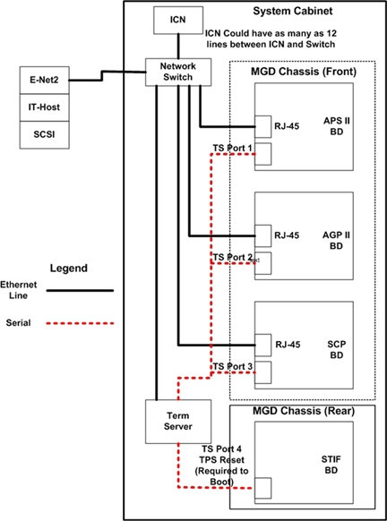

Proprietary to General Electric Company
Direction 5440000, Rev# 5
Signa HDxt Service Methods
Module Version 1.0, Version Date 4/26/07
Proprietary to General Electric Company |
The Ethernet communication is via the second Ethernet port on the LINUX PC Host computer. This path is used for Application code download to the controllers, including downloading of PSDs to the MGD Chassis in the system cabinet. It is also used for serial communication between the host and three (3) MGD processor boards and STIF board.
For details on troubleshooting the VRE subsystem see VRE Troubleshooting.
Booting the system up to Applications software. The Host Monitor will time out after 400 seconds (6 min, 40 secs) if communication has failed between the system cabinet and the host computer the system will fail to initialize.
Table 1 gives examples of errors that will be seen.
Table 1: COMMUNICATION ERRORS
| Error Description | Error Code |
|---|---|
| Thu Jul 11 07:47:45 2006 | Error: 2223851 |
| Host: b3a Proc: NSP | |
| File: TardisReset.cc Line: 524 | |
| Reset TPS was not successful. | |
| errno : 2-> | |
| Thu Jul 11 07:47:45 2006 | Error: 2223817 |
| Host: b3a Proc: NSP | |
| File: TardisReset.cc Line: 451 | |
| TPS is not responding. Please reset TPS. |
Refer to Illustration 1 for Signa Excite communication path block diagram.
Illustration 1: COMMUNICATION PATH DIAGRAM

First determine which communication path is failing: the Reset serial Path or the Ethernet Path.
Either from Common Service Desktop Utilities tab, select “Log into APS,APG,SCP” or from C-shell, type mgd_term that opens up three (3) separate windows that tries to communicate with the controllers via the serial link.
Then select TPS Reset. All three (3) controllers should report VxWorks boot status. If serial connection is successful to all three controllers, serial path is okay.
Check the boot status of each of the controllers. Specifically, check the area where the Host tries to establish a network connection to the Controllers.
For APS and AGP, attach TCP/IP interface to fei0.
For SCP, attach TCP/IP interface to motfec0.
Pinging host at 10.217.255.255 to determine IP address.
Pinging host at 172.22.255.255 to determine IP address.
Pinging host at 10.121.255.255 to determine IP address.
Pinging host at 192.168.255.255 to determine IP address.
Pinging host at 10.47.255.255 to determine IP address.
Pinging host at 10.0.255.255 to determine IP address.
MGD Host IP = 10.0.1.1
Attaching network interface lo0... done.
If all three (3) controllers indicate successful connection, Ethernet connection is okay.
If all three windows fail to open, the Host does not see or recognize the Term Server.
Check: Power to the term server box.
SCP ONLY: If the Ethernet and Serial Links are both down only to the SCP Controller board, verify the RJ45 connectors are in the proper configuration for this board. Since there are two (2) RJ45 connectors, it can easily be connected wrong.
Serial TPS reset connection from Terminal server port1 to STIF Host serial port is needed to receive the reset command from the host. Check connection. See Illustration 1.
View boot progress through serial interface sessions to each processor (that is, “cu APS”, “cu AGP”, “cu SCP”, “mgd_term”, or Common Service Desktop Utility “Log Into APS/AGP/SCP”).
Ethernet runs from second PCI-Ethernet card in host to hub in system cabinet, then is routed to APS, AGP, and SCP. All cables have RJ45-style connectors. Connections are interchangeable and can be swapped to isolate cable or hub issues.
The Ethernet connections are interchangeable at the face of the APS, AGP, and SCP.
Host Fiber interface from IT-PCI card in host to IT-PMC card mounted on APS. Communicates image data from MGD to Host. Extensive diagnostic tests are available to check this.
When a scanner completes TPS reset, is able to prescribe and download a series, and auto-prescans but fails during scan with a MRMail, the problem has typically been with the IT communication set (IT-PCI in host, IT-PMC on APS)
If one board fails to establish a Network connection and the other two (2) boards are successful, the problem may be isolated to the connection between the Hub in the System Cabinet to the failing board. Swap Ethernet cable connections between the failing board and passing board at the board side only. If the problem remains on the same board, possible bad Controller board. If the problem moves to the other Controller, Possible bad cable or Hub port. Try a different Hub port and/or cable.
If all three (3) controllers failed the Ethernet connection, check: Power on the Hub/Ethernet Switch. Check Host Inventory (hinv) for second Ethernet card (ef1). Check Cable connection between 2nd Ethernet board and Hub/Ethernet Switch.
It is possible to connect a laptop directly to serial port on one of the three (3) processor boards. You might want to do this to bypass the term server. )